Function
Growth of Functions
Subjects to be Learned
- big-oh
- max function
- big-omega
- big-theta
- little-oh
- little-omega
Contents
Introduction
One of the important criteria in evaluating algorithms
is the time it takes to complete a job. To have a meaningful comparison of algorithms,
the estimate of computation time must be independent of the programming language,
compiler, and computer used; must reflect on the size of the problem being solved;
and must not depend on specific instances of the problem being solved. The quantities
often used for the estimate are the worst case execution time, and average execution
time of an algorithm, and they are represented by the number of some key operations
executed to perform the required computation.
As an example for an estimate of computation time, let us consider the sequential
search algorithm.
Example: Algorithm for Sequential Search
Algorithm SeqSearch(L, n, x)
L is an array with n entries indexed 1, ..,
n, and x is the key to be searched for in L.
Output: if x is in L , then output its index,
else output 0.
index := 1;
while ( index  n and L[ index
]
n and L[ index
]  x )
x )
index := index +
1 ;
if ( index > n ) , then index
:= 0
return index .
The worst case time of this algorithm, for example, can be estimated as follows:
First the key operation is comparison of keys comparing L[ index
] with x . Most search algorithms (if not all) need "comparison
of keys". The largest number of execution of this comparison is n
, which occurs when x is not in L or when x
is at L[n] , and the while loop is executed n
times. This quantity n thus obtained is used as an estimate of
the worst case time of this sequential search algorithm.
Note that in the while loop two comparisons and one addition are performed.
Thus one could use 3n as an estimate just as well. Also note that
the very first line and the last two lines are not counted in. The reasons for
those are firstly that differences in implementation details such as languages,
commands, compilers and machines make differences in constant factors meaningless,
and secondly that for large values of n , the highest degree term
in n dominates the estimate. Since we are mostly interested in
the behavior of algorithms for large values of n , lower terms
can be ignored compared with the highest term. The concept that is used to address
these issues is something called big-oh, and that is what
we are going to study here.
Big - Oh
The following example gives the idea of one function
growing more rapidly than another. We will use this example to introduce the
concept the big-Oh.
Example: f(n) = 100 n2,
g(n) = n4, the following table and figure show that g(n)
grows faster than f(n) when n > 10. We say f is big-Oh
of g.
| n |
f(n) |
g(n) |
| 10 |
10,000 |
10,000 |
| 50 |
250,000 |
6,250,000 |
| 100 |
1,000,000 |
100,000,000 |
| 150 |
2,250,000 |
506,250,000 |
|
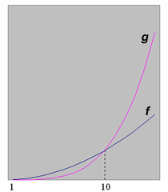 |
Definition (big-oh): Let f
and g be functions from the set of integers (or the set of real
numbers) to the set of real numbers. Then f(x) is said to be
O( g(x) ) , which
is read as f(x) is big-oh of g(x) , if and only if there are constants C and n0
such that
| f(x) | C | g(x)
|
whenever x > n0 .
Note that big-oh is a binary relation on a set of functions (What kinds of properties
does it have ? reflexive ? symmetric ? transitive ?).
The relationship between f and g can be illustrated
as follows when f is big-oh of g. (Please click
on the legend - the bottom yellow part of the graph to activate the illustration animation.)
For example, 5 x + 10 is big-oh of x2,
because 5 x + 10 < 5 x2 + 10 x2
= 15 x2 for x > 1 .
Hence for C = 15 and n0 = 1 ,
| 5x + 10 | C | x2 | .
Similarly it can be seen that 3 x2 + 2 x + 4 <
9 x2 for x > 1 .
Hence 3 x2 + 2 x + 4 is O( x2
) .
In general, we have the following theorem:
Theorem 1: an xn + ... + a1
x + a0 is O( xn
) for any real numbers an , ..., a0
and any nonnegative number n .
Note: Let f(x) = 3 x2 + 2 x + 4, g(x)
= x2, from the above illustration,
we have that f(x) is O(g(x)). Also, since x2 < 3 x2 + 2 x + 4, we
can also get g(x) is O(f(x)). In this case, we say these
two functions are of the same order. Please refer to big-theta
for more information.
Growth of Combinations of Functions
Big-oh has some useful properties. Some of them are
listed as theorems here.
Let use start with the definition of max function.
Definition(max function): Let f1(x)
and f2(x) be functions from a set A
to a set of real numbers B. Then max( f1(x) , f2(x)
) is the function from A
to B that takes as its value at each point x the
larger of f1(x) and f2(x).
(Please click on the legend - the bottom yellow part of the graph to activate the illustration
animation.)
Theorem 2: If f1(x)
is O( g1(x) ) , and f2(x)
is O( g2(x) ) , then (f1
+ f2)( x ) is O( max( g1(x)
, g2(x) ) ) .
From this theorem it follows that if f1(x)
and f2(x) are O( g(x)
) , then (f1 + f2)( x
) is O( g(x) ) , and
(f1 + f2)( x ) is O(
max( f1(x) , f2(x) ) ) .
Theorem 3: If f1(x) is O(
g1(x) ) , and f2(x)
is O( g2(x) ) , then (f1
* f2)( x ) is O( g1(x)
* g2(x) ) .
Big - Omega and Big - Theta
Big-oh concerns with the "less than or equal
to" relation between functions for large values of the variable. It is
also possible to consider the "greater than or equal to" relation
and "equal to" relation in a similar way. Big-Omega is for the former
and big-theta is for the latter.
Definition (big-omega): Let f
and g be functions from the set of integers (or the set of real
numbers) to the set of real numbers. Then
f(x) is said to be 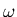( g(x) )
, which is read as f(x) is big-omega
of g(x) , if there are
constants C and n0 such that
| f(x) |  C | g(x)
|
C | g(x)
|
whenever x > n0 .
Definition (big-theta): Let f
and g be functions from the set of integers (or the set of real
numbers) to the set of real numbers. Then
f(x) is said to be 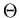( g(x) )
, which is read as f(x) is big-theta
of g(x) , if f(x)
is O( g(x) ), and ( g(x)
) . We also say that f(x) is of order g(x)
. (We have seen this at Big-Oh when introducing the concept of same
order.)
For example, 3x2 - 3x - 5 is ( x2
) , because 3x2 - 3x - 5 x2
for integers x > 2 (C = 1 , n0
= 2 ) .
Hence by Theorem 1 it is ( x2 ) .
In general, we have the following theorem:
Theorem 4: an xn + ... + a1
x + a0 is ( xn )
for any real numbers an , ..., a0 and any
nonnegative number n .
Little - Oh and Little - Omega
If f(x) is O( g(x)
), but not ( g(x) ) , then f(x)
is said to be o( g(x) ) , and it is read as f(x) is little-oh
of g(x) . Similarly
for little-omega ( ) .
) .
For example x is o(x2
) , x2 is o(2x
) , 2x is o(x !
) , etc.
Test Your Understanding of Growth of Function
Indicate which of the following statements are correct
and which are not. Click True or False , then Submit. There are two sets of
questions.
Next -- Calculation of Big-Oh
Back to Schedule
Back to Table of Contents
Subjects to be Learned
- calculation of big-oh relation using limit
- L'Hospital's rule
Contents
Basic knowledge of limits and derivatives of functions
from calculus is necessary here. Big-oh relationships between functions can
be tested using limit of function. as follows:
Let f(x) and g(x) be functions from
a set of real numbers to a set of real numbers.
Then
1. If
,
then f(x) is o( g(x) )
. Note that if f(x) is o( g(x)
), then f(x) is O( g(x) ).
2. If
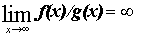, then
g(x) is o( f(x) ) .
3. If
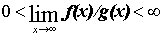, then
f(x) is 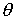( g(x)
) .
4. If
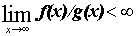 ,
then f(x) is O( g(x) ) .
For example,
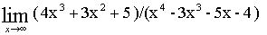
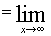 (
4/x + 3/x2 + 5/x4 )/(1 -
3/x - 5/x3 - 4/x4 ) = 0
.
Hence
( 4x3 + 3x2
+ 5 ) is o(x4 - 3x3
- 5x - 4 ) ,
or equivalently, (x4
- 3x3 - 5x - 4 ) is (4x3 + 3x2 +
5 ) .
Let us see why these rules hold. Here we give a proof for 4. Others can be proven similarly.
Proof:
Suppose
.
By the definition of limit this means that
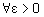 ,
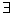
n0 such that
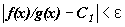
whenever
x > n0
.
Hence 
Hence 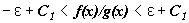
In particular 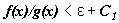
Hence 
Let 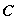
=
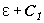 ,
then 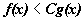
whenever
x > n0
.
Since we are interested in non-negative functions f
and g , this means that
| f(x) | C | g(x)
|
Hence f(x) = O(
g(x) ) .
L'Hospital
(L'Hôpital)'s Rule
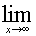f(x)/g(x)
is not always easy to calculate. For example take x2/3x . Since both x2 and 3x go to 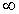 as x goes to and there is no apparent factor
common to both, the calculation of the limit is not immediate. One tool we may be able to use in such cases is L'Hospital's
Rule, which is given as a theorem below.
Theorem 5 ( L'Hospital ):
If f(x) = and g(x) = , and
f(x) and g(x) have the first
derivatives, f '(x) and g'(x)
, respectively, then f(x)/g(x)
= f '(x)/g'(x) .
This also holds when f(x) = 0 and
g(x) = 0 ,
instead of f(x)
= and
g(x) = .
For example, x/ex
= 1/ex
= 0 , because (ex)' = ex,
where e is the base for the natural logarithm.
Similarly ln x/x = (
1/x )/1 = 1/x = 0 .
Note that this rule can be applied repeatedly as long as the conditions are
satisfied.
So, for example, x2/ex
= 2x/ex = 2/ex
= 0 .
Test Your Understanding of L'Hospital's Rule
Indicate which of the following statements are
correct and which are not.
Click True or False , then Submit. There is one set of questions.
In the questions below lim means the limit as n goes to infinity, and n**k is
n raised to the k-th power.
Back
to Schedule
Back to Table of Contents
Sometimes, it is very necessary to compare the order
of some common used functions including the following:
| 1 |
logn |
n |
nlogn |
n2 |
2n |
n! |
nn |
Now, we can use what we've learned above about the
concept of big-Oh and the calculation methods to calculate the order of these
functions. The result shows that each function in the above list is big-oh of
the functions following them. The figure below displays the graphs of these
funcions, using a scale for the values of the functions that doubles for each
successive marking on the graph.